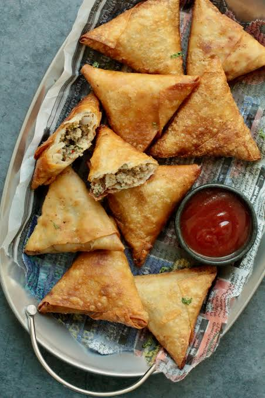
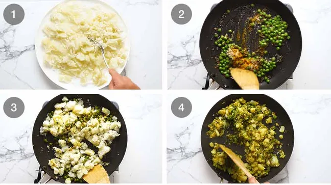
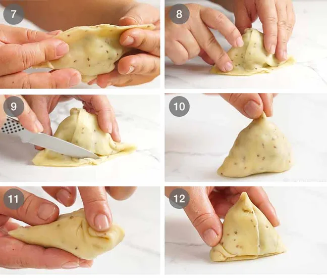

3 Course Indian Meal: Samosas Recipe

Ingredients:
Spices:
- Ajwain seeds
- Amchur
- Asafoeta
- Black Mustard Seed
- Garam Masala
You can pick these up at any indian grocery store!
Other Ingredients:
- Flour
- Green Chili
- Ghee or Oil
- Potatoes
- Ginger
- Peas
- Coriander/Cilantro
(Ghee is more traditional, but either will work!)
How to make Samosas
There are 4 parts to making successful Samosas:
- The spiced potato filling
- The samosa dough
- making the samosa parcels
- frying
Part 1: Making the spiced potato filling
- Boil potatoes until tender, then use a fork to roughly mash. It’s nice to have bits of chunks in the potato for interest, rather than a soft, creamy and uniform mash;
- A healthy dose of spices are fried up with fresh ginger and chilli which is then tossed through along the peas;
- Add the mashed potato and gently but thoroughly mix through, so the flavouring fully permeates the potato; and
- Lastly, mix through fresh coriander, then let the filling cool completely before using.

Part 2: Samosa Dough
- Mix the flour, Ajwain seeds and salt, then pour the ghee or oil in;
- Use your fingers to rub the ghee in until it resembles coarse breadcrumbs. This is the step that gives the Samosa pastry the signature flakiness we know and love so much!
- We then add water until it is wet enough to form a dough. The dough should be soft and pliable, but not so sticky that it sticks to your hands. Form a ball and let it rest for 30 minutes
- Form a log, then cut into 6 equal pieces
- Shape dough into balls
- Roll the dough balls into discs 2mm thick. They should be about 16cm /6.5” in diameter.

Part 3: Samosa Parcels
- Use a small knife to cut a circle in half. Work with one disc of dough at a time. Keep the others covered under cling wrap so they don’t dry out;
- Brush disc with water along half the straight edge you just cut;
- Fold one side in
- Then fold the other side in, overlapping by about 1cm / 2/5″, to form a cone shape. Press joined edges together to secure;
- Form an “O” with your thumb and forefinger, then place the cone inside (like at the holders at the ice cream shop). Fill with the spiced potato filling;
- Brush with water along the cone mouth edge
- Press to Seal
- Place the seam side down on the work surface so it folds over;
- Trim excess pastry off
- Pinch top of cone to make it nice and pointy;
- Fold in the other two corners
- Voila! You’re done!


Part 4: Frying
- Heat the oil to 160°C/320°F, then fry 3 or 4 samosas for 3 minutes, turning occasionally. The pastry should be cooked but pale;
- Drain on paper towels then repeat this first fry with remaining samosas;
- Once you’ve done the first fry with all the Samosas, increase the oil heat to 190°C/375°F. Then fry the Samosas in batches of 3 or 4 for around 1 1/2 to 2 minutes until golden. The Samosas are already cooked through, this step is just to colour and really crisp up that pastry;
- Drain on paper towels and serve piping hot for optimum eating experience!

| Calories: | Carbohydrates: | Protein: | Fat: | Saturated Fat: | Sodium: | Potassium: | Fiber: | Sugar: | Vitamin A: | Vitamin C: | Calcium: | Iron: |
|---|---|---|---|---|---|---|---|---|---|---|---|---|
| 49cal | 10g | 1g | 1g | 1g | 5mg | 18mg | 1g | 10g | 18IU | 1mg | 10mg | 1mg |